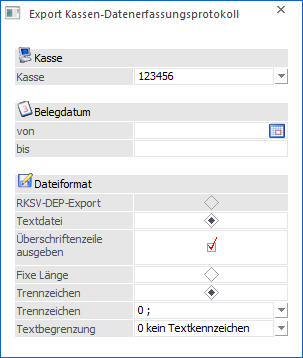
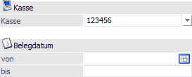
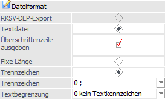
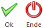
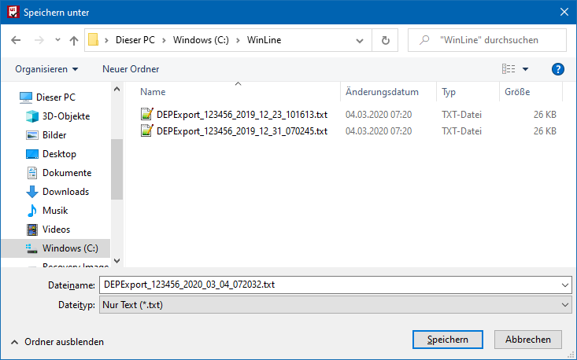
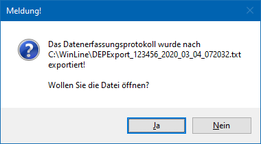
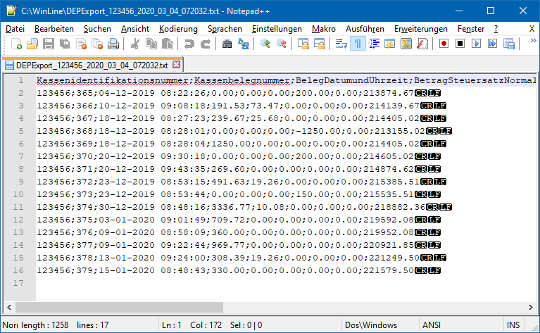

Mit Hilfe des Menüpunkts…
1 WinLine FAKT
1 Auswertungen
1 Export Kassen-Datenerfassungsprotokoll
… kann das Datenerfassungsprotokoll als TXT zu einer allfälligen Prüfung ausgegeben werden.
Hinweis
Durch Anwahl des Buttons "Export" im Programm "Kassen-Datenerfassungsprotokoll" kann das Fenster ebenfalls geöffnet werden.

Folgende Einstellungen können vorgenommen werden:
Selektion

Ø Kasse
Aus der Auswahlliste kann die Kassenidentifiationsnummer ausgewählt werden, für welche der Export durchgeführt werden soll.
Ø Belegdatum von / bis
In diesen Feldern kann der Datumsbereich eingeschränkt werden, für den das Datenerfassungsprotokoll exportiert werden soll.
Dateiformat

Ø RKSV-DEP-Export / Textdatei
Hier kann entschieden werden, in welchem Format das DEP ausgegeben werden soll. Dabei stehen folgende Varianten zur Verfügung:
ü RKSV-DEP-Export
Wenn es sich um
eine Kasse mit Signatur handelt, steht diese Option zur Verfügung. Mit dieser
Option kann das DEP im gewählten Zeitraum in einem wie in der RKSV
vorgeschriebenen Format, also im JSON-Format, exportiert werden.
ü Textdatei
Alternativ kann auch
eine Textdatei ausgegeben werden, die ist aber für eine Prüfung nicht
zulässig.
Wenn die Option "Textdatei" ausgewählt wird, können noch zusätzliche Einstellungen vorgenommen werden:
Ø Überschriftenzeile ausgeben
Mit dieser Option kann gesteuert werden, ob in der Textdatei eine Überschriftenzeile mit ausgegeben wird oder nicht.
Ø Fixe Länge / Trennzeichen
An dieser Stelle kann definiert werden, wie die Informationen innerhalb der Textdatei getrennt werden sollen. Folgende Varianten stehen zur Verfügung:
ü Fixe Länge
Wird diese Option
gewählt, so werden die einzelnen Felder mit einer fixen Satzlänge (mit der max.
Anzahl der Stellen, mit der sie auch in der Datenbank hinterlegt sind)
ausgegeben. Die einzelnen Felder sind mit Tabulatoren getrennt.
ü Trennzeichen
Wird diese Option
gewählt, dann wird die Datei mit Trennzeichen ausgegeben, wobei die Art des
Trennzeichens über das folgende Feld "Trennzeichen" gesteuert wird.
Ø Trennzeichen
Bei Auswahl der Trennzeichen-Option "Trennzeichen" kann an dieser Stelle definiert werden, welches Trennzeichen verwendet werden soll. Hierbei stehen die Zeichen ; (Semikolon) , (Komma) und Tabulator zur Verfügung.
Ø Textbegrenzung
Bei Auswahl der Trennzeichen-Option "Trennzeichen" erfolgt hier die Angabe, ob eine Textbegrenzung durchgeführt werden soll. Hier stehen die Optionen "0 - kein Textkennzeichen", "1 - " (Hochkomma)" oder "2 - ' (einfaches Hochkomma)" zur Verfügung.
Die Ausgabe der Daten mit Textbegrenzung sorgt dafür, dass Textblöcke eindeutig gekennzeichnet werden.
Beispiel
Im Buchungstext wird ein Komma verwendet. Wird nun das Buchungsjournal als Textdatei mit Komma als Trennzeichen und ohne Textkennzeichen ausgegeben, dann verändert das Komma im Text die Satzstruktur.
Buttons

Ø Ok
Durch Anklicken des Buttons "Ok" bzw. der Taste F5 wird der Export des Datenerfassungsprotokolls gestartet, wobei dann das Fenster "Speichern unter" (Windows - Standard - Fenster) geöffnet wird.

In diesem Fenster kann anschließend der Ort (z.B. der lokal angesteckte USB-Stick, eine externe Festplatte oder dergleichen) gewählt werden, wohin die Datei geschrieben werden soll. Grundsätzlich wird die Datei nach dem Schema…
ü DEPExport_Kassenidentifikationsnummer_Jahr_Monat_Tag_Uhrzeit.TXT
benannt, also z.B.
ü DEPExport_123456_2020_03_04_072032.txt
Dieser Name kann aber individuell verändert werden. Durch Anklicken des "Speichern" - Buttons wird die Datei in das angegebene Verzeichnis geschrieben. Nach erfolgreichem Export wird folgende Meldung angezeigt:

Wird die Meldung mit "Ja" bestätigt, wird die exportierte Datei in einem Texteditor geöffnet und kann somit betrachtet werden.

Ø Ende
Bei Anwahl des Buttons "Ende" bzw. der Taste ESC wird das Fenster geschlossen und kein Export durchgeführt.